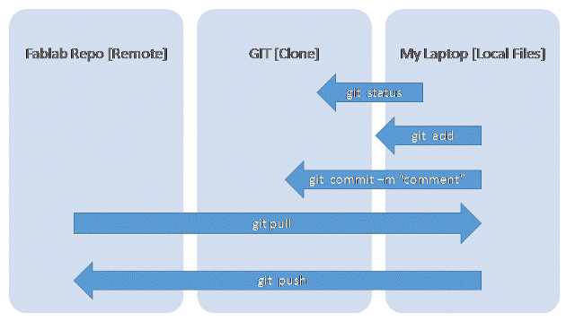
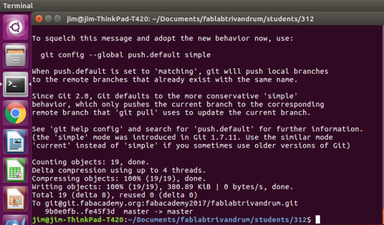
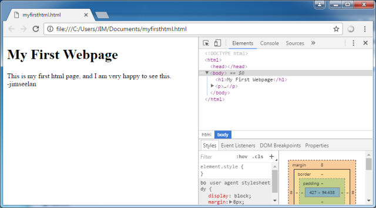
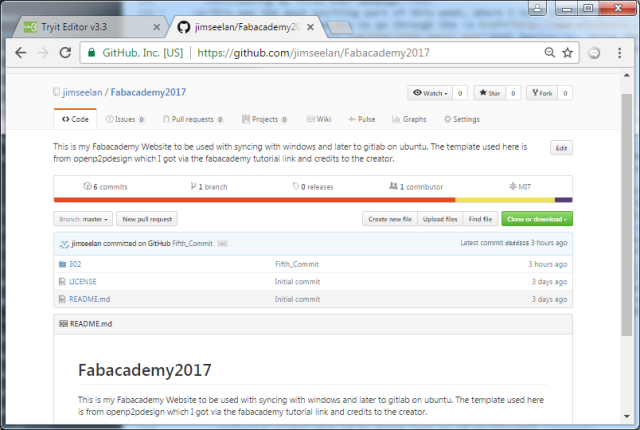
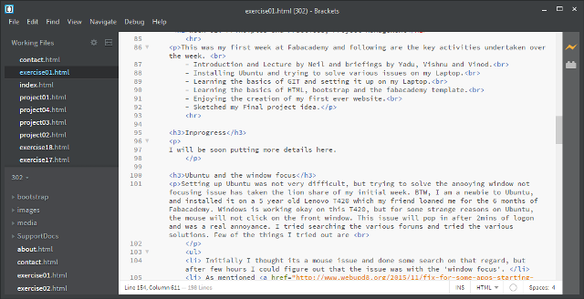

Week-01. Principles and Practices, Project Management
This was my first week at Fabacademy and following are the key activities undertaken over the week.
- Introduction and Lecture by Neil and briefings by Yadu, Vishnu and Vinod.
- Installing Ubuntu and trying to solve various issues on my Laptop.
- Learning the basics of GIT and setting it up on my Laptop.
- Learning the basics of HTML, bootstrap and the fabacademy template.
- Enjoying the creation of my first ever website.
- Sketched my Final project idea.
Ubuntu and the window focus
Setting up Ubuntu was not very difficult, but trying to solve the anooying window not focusing issue has taken the lion share of my initial week. BTW, I am a newbie to Ubuntu, and installed it on a 5 year old Lenovo T420 which my friend loaned me for the 6 months of Fabacademy. Windows is working okay on this T420, but for some strange reasons on Ubuntu, the mouse will not click on the front window. This issue will pop in after 2mins of logon and was a real annoyance. I tried searching the various forums and tried the various solutions. Few of the things I tried out are
- Initially I thought its a mouse issue and done some search on that regard, but after few hours I could figure out that the issue was with the 'window focus'.
- As mentioned here. I Installed the compizconfig-settings-manager, and changed the "Focus Prevention Level" from 'Low' to "Off". This seemed to solve the problem on Day-1, but unfortunatly the issue came back.
- Then as mentioned here. I made the changes in Unity Tweak tool, but of no much use.
- By this time I have figured that this issue sometime goes off on ots own; but returns after a few minutes.
- Then via Terminal I tried
Unity --replacewhich temporarily did a reset and a temporary relief. - Later I found that only
Unitywill also solve, but again momentarily only. - Later upon discussion with my peers here, I installed Cinnamon. I really liked the UI, but after 2 minutes of usage the window focus issue was back there too.
Git - Setting it up and using
Git is used as the version control system at the Fabacademy. The first fabacademy specific activity that I have done at the fablab is setting up GIT and using it. After Neils session, our local Instructor Yadu gave us a brief on Git and about the process of using and setting it up. GIT was entirely new to me and initially I was skeptical on my capabality to understand GIT, but after learning to use it I think I am having a fair idea of it.
I have also found an interesting simulator to try git without worrying about any wrong doings. The link of this git simulator is here
Steps followed to setup git
sudo apt-get install gitssh-keygen -t rsa -b 4096 -C "enter mail id""$ (ssh-agent -s)" #ensure ssh agent is enabled.ssh-add ~/.ssh/id_rsagit config --global user.name "Enter your username" and the following for the email git config --global user.email mail id sudo gedit ~/.ssh/id_rsa.pub copy the entire contents fron the gedit window and close the window.Then paste this key to git.fabacademy.org under Profile Settings >> SSH keys >> Keys. Also need to ensure that a title is given to identify the PC used. And then click add key.git@git.fabacademy.org:fabacademy2017/fablabtrivandrum.git
Commands for day-to-day use of GIT
There are lot of commands in GIT, but to achieve the basic day-to-day activities could be illustrated as in the following diagram.

git status
git add --all
git commit -m "comment"
git pull
git push

Creating my first ever webpage.
This was the most exciting part of this week, where I have learned something that I always wanted to learn and thought to be very very difficult. My first step was to go through the w3schools website and understand about the html basics. Using the 'Try it' browser on the site I went through the various examples on this. Then I tried to create an empty file, then renamed it to index.html, and entered the code to display "This is my first website". I opened it in chrome and hurray my first webpage is made.

Then I went through few links learning bit more about the various html codes, styles, css etc. I also watched this interesting video abou bootstrap on youtube. Learning about bootstrap was very exciting, and it really accelerates the website creation process. Then from the fabacademy website I found this Fab Academy Template by Massimo Menichinelli and found it very interesting. I read through the html codes of the various pages and got a basic understanding of the structure and logic behind the template.
All the time while I was working on Ubuntu I needed to reset the GUI by entering Unity -replace very frequently to keep the mouse focussed on the top window. And as a result by this time I was already fed up with the annoying focus issue on Ubuntu and decided to get the website to be build my website on windows. My plan was to do the website in Windows, upload it to my account in github and then download it to Ubuntu and then upload to the fabacadamy repository using git.

On the editor part, I tried the bluefish editor on Ubuntu, which was easier to use than the inbuilt Gedit editor. I also tried installing Brackets on Ubuntu, but the installation was not successfule despite number of attempts, and the issue was due to some dependencies. Then I installed Brackets on Windows. I really liked brackets over Bluefish or Gedit, mainly because of the simple design, and personally I felt its bit easier to use. Initially I modified the landing page index.html and then I started eeg the aboegut.html page. That night I also shared the link to our group for feedback. Our local instructor Vishnu mentioned about my photo on the webpage not responsive. I explored through the pages and thee css and found that the issue is with a specific pic class on the fabacademy.css, so I changed the code on the about.html page to the default image tags as
img src="images/week1/myimage.jpg" width="500" height=auto, which made the images responsive.

Final Project Idea
As part of this weeks assignment, we are required to identify our final project. I am planning to do a 3D human scanner. My plan is to make a rig that could mount a rotating camera to take multiple photos of the subject across 360-deg. Then these photos could be stictched and made into a model using a photogrammetry application. I am researching on the possibles apps and techniques and will be posting a more detail plan soon.

I shall be updating more details of this idea on my Concept page
My weeks work was reviewed by our Local Instructors Yadu and Vishnu. We also had our Super node review by Pradnya on Tuesday 31st January. This week was an good start, meeting fabulous people and learning many interesting things. Thanks for reading my first weeks assignment page.